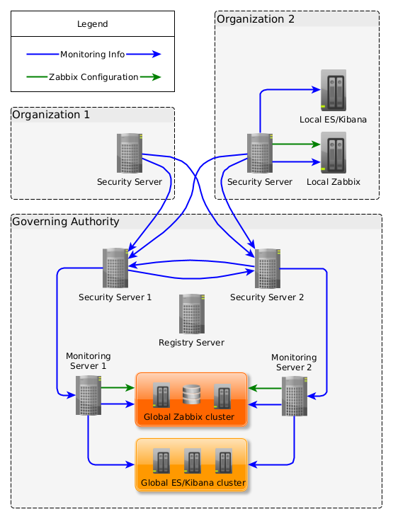

1. Introduction
1.1. Overview
This user guide describes how to configure monitoring of security servers on organizational level. The guide includes instructions how to send collected monitoring data to Zabbix and Elasticsearch servers for further processing and visualization.
Monitoring is carried out by the proxy monitoring agent (PMA) add-on. The PMA add-on is installed during security server installation and does not require any further installation.
| In case you have to configure monitoring on central level, using a monitoring server, refer to UXP Monitoring Server Installation and Configuration Guide [UXP-IG-MS]. |
1.2. Target Audience
The intended audience of this guide is the system administrators responsible for monitoring the UXP security servers in an organization.
The document is intended for readers with a moderate knowledge of Linux server management, computer networks, and the functioning principles of UXP technology.
Basic user knowledge of the Zabbix distributed monitoring solution as well as the Elasticsearch and Kibana data analytics tools is required. Refer to the corresponding sections of the documentation of Zabbix [Zabbix], Elasticsearch and Kibana [Elastic].
1.3. References
-
[CRON] Quartz Scheduler CRON expression,
http://www.quartz-scheduler.org/documentation/quartz-2.3.0/tutorials/crontrigger.html -
[DATE-TIME-FORMATTER] DateTimeFormatter (Java SE 17 & JDK 17),
https://docs.oracle.com/en/java/javase/17/docs/api/java.base/java/time/format/DateTimeFormatter.html -
[Elastic] Learn about Elastic | Elastic,
https://www.elastic.co/guide/index.html -
[Elastic-Authorization] User authorization | Elasticsearch Guide,
https://www.elastic.co/guide/en/elasticsearch/reference/8.17/authorization.html -
[Elastic-Cluster] Add and remove nodes in your cluster | Elasticsearch Guide,
https://www.elastic.co/guide/en/elasticsearch/reference/8.17/high-availability.html -
[Elastic-Heap] Important Elasticsearch configuration | Elasticsearch Guide,
https://www.elastic.co/guide/en/elasticsearch/reference/8.17/important-settings.html#heap-size-settings -
[Elastic-Security] Configure security for the Elastic Stack | Elasticsearch Guide,
https://www.elastic.co/guide/en/elasticsearch/reference/8.17/configuring-stack-security.html -
[Elastic-Upgrade-7.17] Upgrade Elasticsearch | Elasticsearch Guide [7.17],
https://www.elastic.co/guide/en/elasticsearch/reference/7.17/setup-upgrade.html -
[Elastic-Upgrade-8.17] Upgrade Elasticsearch | Elasticsearch Guide [8.17],
https://www.elastic.co/guide/en/elasticsearch/reference/8.17/setup-upgrade.html -
[Time-Zones] List of Supported Time-Zones,
http://php.net/manual/en/timezones.php -
[UXP-IG-MS] Cybernetica AS. UXP Monitoring Server: Installation and Configuration Guide. Document ID: UXP-IG-MS
-
[UXP-PR-MESS] Cybernetica AS. UXP Message Protocol v4.0: Technical Specification. Document ID: UXP-PR-MESS
-
[UXP-PR-MON] Cybernetica AS. UXP Monitoring Protocol: Technical Specification. Document ID: UXP-PR-MON
-
[UXP-UG-SSHA] Cybernetica AS. UXP Security Server: Configuring High Availability and Load Balancing. Document ID: UXP-UG-SSHA
-
[Zabbix] Zabbix Documentation,
http://www.zabbix.com/documentation.php -
[Zabbix-Discovery] Zabbix Manual, Discovery,
https://www.zabbix.com/documentation/6.0/en/manual/discovery -
[Zabbix-Frontend] Zabbix Manual, Web Interface Installation,
https://www.zabbix.com/documentation/6.0/en/manual/installation/frontend -
[Zabbix-HA] Zabbix Manual, High Availability,
https://www.zabbix.com/documentation/6.0/en/manual/concepts/server/ha -
[Zabbix-Requirements] Zabbix Manual, Requirements
https://www.zabbix.com/documentation/6.0/en/manual/installation/requirements#database-size
2. Monitoring UXP Security Servers
2.1. Types of Monitoring Data
The security server generates four types of monitoring data.
- Environmental monitoring data
-
Information about the security server status. For example, memory consumption, CPU usage, package versions, etc.
- Operational monitoring data
-
Information about the requests processed by the security server. This includes data such as the request ID, client ID, service ID, various attributes read from the SOAP message header or from the HTTP headers (REST), request and response timestamps, request sizes, etc.
- Operational monitoring data statistics
-
Statistics calculated based on operational monitoring data. The statistics represent the total number of transactions and the number of successful transactions for each unique combination of the security server ID and type, client ID, and service ID for specified time period.
- Health data
-
Statistics based on the environmental and operational monitoring data. For example, the time of the last successful request and the number of unsuccessful requests occurred.
2.2. Levels of Monitoring
In a UXP instance, monitoring can happen on two levels – organizational and central. Figure 1 shows the components of the UXP monitoring solution.

-
On the organizational (local) level, a security server add-on sends its environmental monitoring information to locally configured Zabbix and its operational monitoring data to locally configured Elasticsearch (corresponding blue arrows in the diagram).
-
On the central (global) level, the registry server administrator can install one or more monitoring servers (cluster) that collect information from the security servers (corresponding blue arrows in the diagram). The monitoring server utilizes its own security server and the registered client (so-called central monitoring client) therein to facilitate monitoring requests. Monitoring server forwards collected environmental monitoring information to Zabbix (cluster) and operational monitoring data and its statistics to Elasticsearch (cluster) (corresponding blue arrows in the diagram).
Information about the central monitoring client is entered into the registry server and is distributed via global configuration to all security servers and monitoring servers.
Communication between the central monitoring client’s security server and the monitoring server should be configured to use HTTPS. Both, the security server and monitoring server use their internal TLS certificates that are distributed manually to the other party respectively. Both, client side and server side authentication is performed.
The monitoring services are implemented in the security server as standard UXP services. Detailed specification of the UXP Monitoring Protocol and UXP Message Protocol can be found in [UXP-PR-MON] and [UXP-PR-MESS].
Both the security server add-on and the monitoring server have the capability to configure monitored entities in Zabbix automatically, eliminating the need for manual configuration (green arrows in the diagram).
2.3. Access Control of Monitoring Data
All monitoring data is not equally accessible to all service clients. Access to monitoring data is controlled to protect detailed service consumption of UXP members and health status of the security servers' from the public. Meanwhile, all monitoring data is accessible to the central monitoring in order to monitor the health of the UXP instance.
| Security server owner can request a complete set of monitoring data from its security server. To avoid unauthorized access to monitoring data, the connection between the security server and information system requesting information as the security server owner must be set to use HTTPS. This can be done in the "Internal Servers" tab of the security server owner details. |
2.3.1. Access Rights of Environmental Monitoring Data
-
Central monitoring client can receive environmental monitoring data from all security servers of a UXP instance. This right is used by the monitoring server to gather monitoring data from all the security servers of the instance.
-
Security server owner can receive environmental monitoring data of its own security server.
2.3.2. Access Rights of Operational Monitoring Data and Its Statistics
-
Central monitoring client can receive operational monitoring data and its statistics about the requests processed by all security servers of the UXP instance. This right is used by the monitoring server to gather monitoring data from all the security servers of the instance.
-
Security server owner can receive operational monitoring data and its statistics about all requests processed by its own security server.
-
All security server clients can receive operational monitoring data and its statistics about all requests where they are either in a service client or service provide role. Service clients can request their operational monitoring data and its statistics from any security server of the UXP instance.
2.3.3. Access Rights of Health Data
-
All clients (including security server owners and the central monitoring client) can request health data of all security servers.
2.4. Uses for Monitoring Services
The privileges of the central monitoring client are used by the UXP monitoring server to monitor the whole UXP instance.
The privileges of the security server owner and clients can be used by UXP members to implement their own custom applications that gather and process monitoring data. For instance, if the external monitoring tools (Zabbix, Elasticsearch/Kibana) supported by UXP components by default are not enough to fulfill a certain business goal.
The technical details on how to consume the monitoring services are available in the UXP Monitoring Protocol specification [UXP-PR-MON].
2.5. Default Ports for Monitoring
The table below lists the default ports used by the PMA add-on of the security server for receiving requests and connecting to Zabbix and Elasticsearch servers. If ports other than the default ones are configured (see Sections Installing Zabbix and Configuring Elasticsearch and Kibana), use those instead of the ones defined in the tables.
| Enabling any supplementary services necessary for the functioning and management of the operating system (such as DNS, NTP, and SSH) is outside the scope of this guide. |
- Ports required for inbound connections to security server
| Port (TCP) | Purpose | Network scope |
|---|---|---|
2082 |
Used to listen for status information service requests. This is only required when an internal load balancer is being used to distribute requests between security server cluster nodes (see [UXP-UG-SSHA]). |
PRIVATE |
- Ports required for outbound connections from security server
| Port (TCP) | Purpose | Network scope |
|---|---|---|
8080 |
Used to remote configuration of the Zabbix server. This is only required when Zabbix is being used to locally monitor the security server with the UXP native Zabbix configurator. |
PRIVATE |
10051 |
Used to forward monitoring data to the Zabbix server. This is only required when Zabbix is being used to locally monitor the security server. |
PRIVATE |
9200 |
Used to forward operational monitoring data to the Elasticsearch server (RESTful API). This is only required when Elasticsearch is being used to locally monitor the security server. |
PRIVATE |
The network scope specifies whether the port should be visible only within the PRIVATE network (for instance, within your organization) or the ports should be visible to the PUBLIC network (the Internet). Hiding ports that are used only for communications within the private network of your organization reduces the risk of security attacks from the public network.
2.6. Tested Zabbix and Elasticsearch Versions
The PMA has been tested and confirmed to work with:
-
Zabbix version 6.0 (LTS),
-
Elasticsearch and Kibana versions 7.x and 8.x.
| UXP PMA is not compatible with Zabbix 5.0 and older versions. |
| UXP PMA is not compatible with Elasticsearch and Kibana 6.x versions anymore. |
3. Environmental Monitoring
The PMA periodically collects environmental data of the security server (by default, every 15 seconds) and caches it in the memory.
Forward collected data to Zabbix for centralized analysis, alerting, and reporting. For this, install the appropriate Zabbix (version 6.0 LTS) or use an existing one, and configure it with the PMA.
You can utilize either a single Zabbix server or its high-availability (HA) solution [Zabbix-HA], depending on the scale of your deployment and your requirements for reliability and fault tolerance. In the Zabbix HA mode multiple Zabbix servers are run as nodes in a cluster and use the same database. While one Zabbix server in the cluster is active, others are on standby, ready to take over if necessary.
If you want to use an existing instance of Zabbix, ensure it meets the system requirements described in the following section. Then, skip Section Installing Zabbix and continue with the configuration described in Section Connecting Zabbix to Proxy Monitoring Agent. Otherwise, proceed with Section Installing Zabbix to install a Zabbix server that meets the system requirements.
3.1. Required System Parameters for Zabbix Server
-
Ubuntu 24.04 or 22.04 Long-Term Support (LTS) operating system on a 64-bit platform;
-
2 GB RAM;
-
20 GB hard disk space.
|
Zabbix database size mainly depends on these variables, which define the amount of stored historical data:
Currently, the Zabbix template for the security server By default, Zabbix keeps values for 90 days, i.e., Depending on the database engine used and on the type of received values (floats, integers, strings, log files, etc.), the disk space for keeping a single value may vary from 40 bytes to hundreds of bytes. Normally it is around 90 bytes per value for numeric items. The size of text/log item values is impossible to predict exactly, but you may expect around 500 bytes per value. For simplicity, assume each string value is 90 bytes in size. The security server template currently contains 50 numeric values and 12 string values (mainly package versions). In this case, it means that 2.64M of values will require Zabbix keeps a 1-hour max/min/avg/count set of values for each item in the table trends, by default for 1 year. In this case, it means that 62 items require Each Zabbix event requires approximately 250 bytes and recovered event 80 bytes of disk space. It is hard to estimate the number of events generated by Zabbix daily. By default, Zabbix retains events for 1 year. In the worst-case scenario, assuming 1 event per seconds, this would require approximately 10GB of disk space: So, the total required disk space can be calculated as: Configuration (normally 10MB or less) + History + Trends + Events In this case, total required disk space is Refer to the Zabbix manual [Zabbix-Requirements] for detailed information about your exact disk space requirements. |
3.2. Installing Zabbix
| It is recommended that Zabbix is installed on a separate server than the server running the security server. |
Refer to Section Installing Single Zabbix Server to install a single Zabbix Server, or refer to Section Installing Zabbix in Native HA Setup to install Zabbix in a native HA setup.
3.2.1. Installing Single Zabbix Server
- Install Zabbix 6.0 LTS from packages using the command line
-
-
Install the Zabbix repository configuration package:
-
Ubuntu 24.04 LTS
wget https://repo.zabbix.com/zabbix/6.0/ubuntu/pool/main/z/zabbix-release/\ zabbix-release_6.0-6+ubuntu24.04_all.deb sudo dpkg -i zabbix-release_6.0-6+ubuntu24.04_all.deb -
Ubuntu 22.04 LTS
wget https://repo.zabbix.com/zabbix/6.0/ubuntu/pool/main/z/zabbix-release/\ zabbix-release_6.0-4+ubuntu$(lsb_release -rs)_all.deb sudo dpkg -i zabbix-release_6.0-4+ubuntu$(lsb_release -rs)_all.deb
-
-
Install the
en_US.UTF-8locale:sudo apt update sudo apt install locales sudo locale-gen en_US.UTF-8 sudo update-locale -
Install the Zabbix server, frontend, nginx-conf and agent packages with PostgreSQL support (adding
apache2-bin-will skip apache packages which are otherwise automatically installed):-
Ubuntu 24.04 LTS
sudo apt install nano postgresql zabbix-server-pgsql zabbix-frontend-php \ php8.3-pgsql zabbix-nginx-conf apache2-bin- zabbix-sql-scripts zabbix-agent -
Ubuntu 22.04 LTS
sudo apt install nano postgresql zabbix-server-pgsql zabbix-frontend-php \ php8.1-pgsql zabbix-nginx-conf apache2-bin- zabbix-sql-scripts zabbix-agent
-
-
Create a database for the Zabbix server (enter a password for the Zabbix database user and remember it for later):
sudo -i -u postgres createuser --pwprompt zabbix sudo -i -u postgres createdb -O zabbix zabbix -
Import initial schema and data into database:
zcat /usr/share/zabbix-sql-scripts/postgresql/server.sql.gz | \ sudo -u zabbix psql zabbix -
Edit Zabbix server database configuration:
sudo nano /etc/zabbix/zabbix_server.confUncomment the
DBPasswordparameter and add the password you created:DBPassword=my-password -
Edit Nginx configuration file:
sudo nano /etc/zabbix/nginx.confUncomment
listenandserver_namedirectives, modify according to your needs:listen 8080; server_name my-zabbix-server-name; -
Optional: Remove symlink to Nginx default configuration, since Zabbix Nginx configuration file is located elsewhere. NB! Required if you configured
listendirective to80in the previous step:sudo rm -f /etc/nginx/sites-enabled/default -
Enable and start
zabbix,nginxandphpprocesses:-
Ubuntu 24.04 LTS
sudo systemctl enable zabbix-server zabbix-agent nginx php8.3-fpm sudo systemctl restart zabbix-server zabbix-agent nginx php8.3-fpm -
Ubuntu 22.04 LTS
sudo systemctl enable zabbix-server zabbix-agent nginx php8.1-fpm sudo systemctl restart zabbix-server zabbix-agent nginx php8.1-fpm
-
-
- Finish Zabbix frontend configuration using Zabbix UI
-
-
Open Zabbix setup page in browser, add correct port number if you replaced
8080with something else in nginx configurationhttp://<your-zabbix-server>:8080/. -
On the
Welcomepage, click Next step. -
On the
Check of pre-requisitespage, click Next step. -
On the
Configure DB connectionpage, check that the database type isPostgreSQL, enter the password for the database userzabbix, and click Next step. -
On the
Settingspage, select correct default time zone and click Next step. -
On the
Pre-installation summarypage, click Next step. -
On the
Installpage, click Finish to end installation.
-
- Change the Zabbix UI default password using Zabbix UI
-
-
Log in to the Zabbix frontend using the default credentials: username
Adminand passwordzabbix. -
In the
Administrationmenu, chooseUsersand click on theAdminuser. -
Click Change password and enter a new secure password.
-
Click Update to accept the changes.
-
Installation of the Zabbix server is complete. Proceed to Section Connecting Zabbix to Proxy Monitoring Agent for instructions on configuring PMA to connect to the Zabbix server.
| Refer to the Zabbix online documentation [Zabbix-Frontend] for more detailed information about Zabbix frontend configuration. |
3.2.2. Installing Zabbix in Native HA Setup
In the Zabbix HA mode multiple Zabbix servers are run as nodes in a cluster and use the same database server.
Installing Database Server
- Install the PostgreSQL database server from packages using the command line
-
-
Install the Zabbix repository configuration package by completing the first step from the previous Section Installing Single Zabbix Server.
-
Install the PostgreSQL server and necessary Zabbix SQL scripts:
sudo apt update sudo apt install nano postgresql zabbix-sql-scripts -
Create a database for the Zabbix server (enter a password for the Zabbix database user
zabbixand remember it for later):sudo -i -u postgres createuser --pwprompt zabbix sudo -i -u postgres createdb -O zabbix zabbix -
Import initial schema and data into database (enter the password for the database user
zabbix):zcat /usr/share/zabbix-sql-scripts/postgresql/server.sql.gz | \ sudo -i -u postgres psql -h 0 -U zabbix -d zabbix -W -
Configure PostgreSQL to listen on all IPs by editing the
postgresql.confconfiguration:sudo nano /etc/postgresql/<version>/main/postgresql.confUncomment the
listen_addressesparameter and set the value to'*':listen_addresses = '*' -
Configure client authentication by editing the
pg_hba.confconfiguration:sudo nano /etc/postgresql/<version>/main/pg_hba.confAdd the following line at the end of the file for every Zabbix server node, where
<zabbix-node-address>is the hostname (resolves to an IP address via DNS), or IP address and a CIDR mask of the node:host zabbix zabbix <zabbix-node-address> scram-sha-256 -
Restart
postgresqlservice:sudo systemctl restart postgresql
-
Installation of the Zabbix database server is completed.
Installing Zabbix Server Node
- Install the Zabbix server node from packages using the command line
-
-
Install the Zabbix repository configuration package by completing the first step from the previous Section Installing Single Zabbix Server.
-
Install the
en_US.UTF-8locale:sudo apt update sudo apt install locales sudo locale-gen en_US.UTF-8 sudo update-locale -
Install the Zabbix server, frontend, nginx-conf and agent packages with PostgreSQL support (adding
apache2-bin-will skip apache packages which are otherwise automatically installed):-
Ubuntu 24.04 LTS
sudo apt install nano zabbix-server-pgsql zabbix-frontend-php \ php8.3-pgsql zabbix-nginx-conf apache2-bin- zabbix-agent -
Ubuntu 22.04 LTS
sudo apt install nano zabbix-server-pgsql zabbix-frontend-php \ php8.1-pgsql zabbix-nginx-conf apache2-bin- zabbix-agent
-
-
Edit the Zabbix server configuration:
sudo nano /etc/zabbix/zabbix_server.conf-
Uncomment the
DBHostparameter and set the IP address or hostname (resolves to an IP address via DNS) of the database server:DBHost=<database-server-address> -
Uncomment the
DBPasswordparameter and set the password you created for database userzabbix:DBPassword=******** -
Uncomment the
HANodeNameparameter and set the unique node identifier, e.g.,zabbix-node-1:HANodeName=zabbix-node-1 -
Uncomment the
NodeAddressparameter and set the address that will be used by Zabbix frontend to connect to the active server node.NodeAddressmust match the IP address or hostname (resolves to an IP address via DNS) of the respective Zabbix server.NodeAddress=<zabbix-node-1-address>
-
-
Edit the Nginx configuration file:
sudo nano /etc/zabbix/nginx.confUncomment
listenandserver_namedirectives, modify according to your needs:listen 8080; server_name my-zabbix-server-name; -
Optional: Remove symlink to Nginx default configuration, since Zabbix Nginx configuration file is located elsewhere. NB! Required if you configured
listendirective to80in the previous step:sudo rm -f /etc/nginx/sites-enabled/default -
Enable and start
zabbix,nginxandphpprocesses:-
Ubuntu 24.04 LTS
sudo systemctl enable zabbix-server zabbix-agent nginx php8.3-fpm sudo systemctl restart zabbix-server zabbix-agent nginx php8.3-fpm -
Ubuntu 22.04 LTS
sudo systemctl enable zabbix-server zabbix-agent nginx php8.1-fpm sudo systemctl restart zabbix-server zabbix-agent nginx php8.1-fpm
-
-
- Finish Zabbix node frontend configuration using Zabbix UI
-
-
Open Zabbix setup page in browser, add correct port number if you replaced
8080with something else in nginx configurationhttp://<your-zabbix-server>:8080/. -
On the
Welcomepage, click Next step. -
On the
Check of pre-requisitespage, click Next step. -
On the
Configure DB connectionpage, check that the database type isPostgreSQL, enter the correct database host, enter the password for the database userzabbix, and click Next step. -
On the
Settingspage, select correct default time zone and click Next step. -
On the
Pre-installation summarypage, click Next step. -
On the
Installpage, click Finish to end installation.
-
- Change the Zabbix UI default password using Zabbix UI
-
-
Log in to the Zabbix frontend using the default credentials: username
Adminand passwordzabbix. -
In the
Administrationmenu, chooseUsersand click on theAdminuser. -
Click Change password and enter a new secure password.
-
Click Update to accept the changes.
-
Installation of the Zabbix node is completed.
| Install the additional node(s) by following the previous steps, excluding the step to change the Zabbix UI default password. |
Finally, verify the status of the Zabbix cluster, by running the following command on Zabbix nodes. If the node is active, it will display the cluster status. If it is not active, repeat the command on another node:
sudo zabbix_server -R ha_statusContinue to the following sections for instructions on setting up PMA to connect to the Zabbix server.
3.3. Connecting Zabbix to Proxy Monitoring Agent
To enable the forwarding of monitoring information to a Zabbix server, modify the configuration file /etc/uxp/monitor-agent.ini on the security server, by adding an entry similar to:
[zabbix-1]
address = 192.168.56.101The section [zabbix-<suffix>] defines a Zabbix monitoring station, where the section name has a required prefix – zabbix, and <suffix> must be some string that is unique among the other Zabbix sections.
The following table gives an overview of the possible configuration fields for connection of the Zabbix section.
Note that the fields without a default value must be explicitly defined.
| Field | Default Value | Explanation |
|---|---|---|
address |
Zabbix server hostname (resolves to an IP address via DNS) or IP address. |
|
port |
|
Port where the Zabbix server listens for monitoring information. |
cluster-nodes[1] |
|
Comma-separated list of the section names for the additional nodes of the Zabbix native HA cluster. |
[1] If the Zabbix native HA cluster is used, add a new configuration section for each additional cluster node similar to:
It does not matter which Zabbix cluster nodes are configured as additional nodes in the cluster-nodes parameter.
|
[zabbix-1]
; ...
cluster-nodes = node-2-for-zabbix-1, node-3-for-zabbix-1
[node-2-for-zabbix-1]
address = 192.168.56.102
[node-3-for-zabbix-1]
address = 192.168.56.103The following table gives an overview of the possible configuration fields for the section of the additional cluster node. Note that the fields without a default value must be explicitly defined.
| Field | Default Value | Explanation |
|---|---|---|
address |
Node hostname (resolves to an IP address via DNS) or IP address. |
|
port |
|
Port where the node listens for monitoring information. |
Before the connected Zabbix server is able to receive monitoring data, monitored host with their entities need to be configured properly in the Zabbix server. Proceed to the next Section, Configuring Security Server Host in Zabbix, to continue modifying the configuration file.
Changes to the configuration file /etc/uxp/monitor-agent.ini take effect after reloading the PMA configuration. To do this, run the following command on the security server:
sudo reload-monitor-agent3.4. Configuring Security Server Host in Zabbix
Ensure that the security server host and its monitoring entities are correctly configured in the Zabbix server. You have two options: use either the UXP native Zabbix configurator or the Zabbix native discovery solution [Zabbix-Discovery].
After configuration, check in the Zabbix UI to ensure that the security server host has been created and that monitoring data is being received by navigating to Monitoring → Latest data.
3.4.1. Configuring via UXP Native Zabbix Configurator
The PMA includes functionality to configure the security server host in the Zabbix server through the Zabbix API. During this process, the PMA creates a host group in the Zabbix server and adds the security server host, on which it is running, to that group. Additionally, the PMA imports the UXP Security Server by PMA template, which is the security server template for Zabbix 6.0 (located in the directory /usr/share/uxp/templates/zabbix), into the Zabbix server and links it to the newly added host.
Upon launch, the PMA attempts to configure the Zabbix server. If the configuration fails (e.g., if Zabbix is down), the PMA will periodically retry the configuration until it succeeds.
To enable the Zabbix configurator, follow these steps:
- Create a Zabbix user for API client access using Zabbix UI
-
-
Create a host group for the security servers by navigating to
Configuration→Host groups, and clicking Create host group.-
Enter a group name , such as
uxp-security-servers. -
Finally, click Add.
-
-
Create a user group by navigating to
Administration→User groups, and clicking Create user group.-
Enter a group name, such as
UXP PMAs. -
Select
DisabledforFrontend access. -
On the
Permissionstab, select the previously created security servers host group andTemplates/Applicationshost group. ChooseRead-writepermissions and click theAddlink. -
Finally, click Add.
-
-
Create a user by navigating to
Administration→Users, and clicking Create user.-
Enter a username, such as
uxp-pma. -
Select previously created group for
Groups. -
Enter a password.
-
On the
Permissionstab, selectAdmin roleforRole. -
Finally, click Add.
-
-
- Configure Zabbix in the security server
-
Modify the
/etc/uxp/monitor-agent.iniconfiguration file on the security server, by adding an entry similar to:[zabbix-1] ; ... enable_configurator = true host_group = uxp-security-servers conf_api_port = 8080 conf_api_path = /api_jsonrpc.php username = uxp-pma password = ********The following table gives an overview of the possible configuration fields for the Zabbix configurator. Note that the fields without a default value must be explicitly defined.
Table 3. Parameters for Zabbix Configurator Field Default Value Explanation enable_configurator
trueEnables/disables automatic configuration of the Zabbix server.
The following options only have effect if enable_configurator = true. enable_coexist_mode
falseEnables/disables coexist mode with UXP Monitoring Server. If coexist mode is enabled, configured hostname in Zabbix gets suffix " (local)".
In case the configured Zabbix server is used by UXP Monitoring Server also, enable coexist mode to avoid configuration collisions. username
Zabbix username. The user type must be
Super adminorAdminwithRead-writepermissions for the configured security servers andTemplates/Applicationshost groups.password
Zabbix user password.
conf_api_port
8080Zabbix configuration API port.
conf_api_path
/api_jsonrpc.phpZabbix configuration API path.
host_group
The host group that the PMA should configure the security server to be a part of.
After updating the configuration, reload the PMA configuration by running the following command on the security server:
sudo reload-monitor-agent
3.4.2. Configuring via Zabbix Discovery
Zabbix discovery is a feature that automatically identifies hosts based on criteria such as IP ranges or network protocols within your IT infrastructure. When triggered, this discovery action adds the identified security server host and links the UXP Security Server by PMA template to it.
Follow the steps below to set up the host configuration in the Zabbix server using discovery:
- Obtain the security server template file for Zabbix
-
-
Copy the
UXP Security Server by PMAtemplate filetemplate_app_uxp_security_server_by_pma.yamlfrom the security server’s directory/usr/share/uxp/templates/zabbix/6.0to the computer where you are running the Zabbix UI.
-
- In the Zabbix UI
-
-
Import the previously copied
UXP Security Server by PMAtemplate by navigating toConfiguration→Templates, and clicking Import. Choose the template file and click Import. -
Create a host group for discovered security servers by navigating to
Configuration→Host groups, and clicking Create host group. Enter the group name (e.g.,uxp-security-servers) and click Add. -
Create a discovery rule by navigating to
Configuration→Discovery, and clicking Create discovery rule.-
Enter the discovery rule name (e.g.,
Security servers) -
Enter the correct IP range for the security servers.
-
Add a discovery check by clicking the
Addlink. SelectHTTPSas the check type, enter port4000(the user interface port of the security server), and click Add. -
For the
Host nameoption, select eitherDNS nameorIP address.The DNS nameoption value requires the monitored network to use DNS servers that support reverse DNS lookup, enabling IP addresses to be resolved into domain names. -
Finally, click Add.
-
-
Create a discovery action for the created rule by navigating to
Configuration→Actions→Discovery actions, and clicking Create action.-
Enter the action name (e.g.,
Auto discovery. Security servers). -
Add a condition by clicking the
Addlink.-
For the
Type, selectDiscovery rule, for theOperator, selectequals, and for theDiscovery rules, select the previously created rule (e.g.,Security servers). -
Click Add.
-
-
Add next operations by clicking on the
Operationstab:-
Click the
Addlink. SelectAdd to host groupfor theOperation, previously created host group (e.g.,uxp-security-servers) for theHost groups, and click Add. -
Click the
Addlink. ForOperation, selectLink to template, and forTemplatesselect previously imported templateUXP Security Server by PMAfrom theTemplates/Applicationshost group. Click Add.
-
-
Finally, click Add.
-
-
- In the security server
-
-
Modify the configuration file
/etc/uxp/monitor-agent.inito disable the UXP native Zabbix configurator and set the technical hostname type toDNSorIPaccording to the previously created discovery rule:[zabbix-1] ; ... enable_configurator = false technical_host_name_type = DNSAfter updating the configuration, reload the PMA configuration by running the following command:
sudo reload-monitor-agent
-
3.4.3. Zabbix Template: UXP Security Server by PMA
The Security Server by PMA template, located in the security server /usr/share/uxp/templates/zabbix/6.0/template_app_uxp_security_server_by_pma.yaml, provides the following monitoring items and triggers:
- Items
-
Name Description Authentication certificate expire timestamp
The earliest timestamp when some active and registered authentication certificate expires.
Authentication certificate OCSP status not good
Whether some active and registered authentication certificate has an OCSP response with the status other than 'Good'.
Authentication certificate usable
Whether authentication certificate is usable.
CPU idle
The CPU idle percent for the last 15 seconds. Calculated the same way as UNIX 'top' utility does.
CPU load average
The CPU load average for the last minute.
Disk free
The number of bytes available on the partition where root directory is located.
Disk free in %
The percent of bytes available on the partition where root directory is located.
Disk total
The size of the partition where root directory is located.
Global configuration valid
Whether the global configuration is valid.
Java VM operable
Whether Java VM is operable.
Memory free
Available free memory.
Memory total
The size of the memory.
[nginx | postgresql]: status
Status of the [
nginx|postgresql] service.[nginx | postgresql]: uptime
Uptime of the [
nginx|postgresql] service.NTP synchronized
Whether NTP is synchronized.
Operating system and version
Operating system and version.
Security server status
Status of the security server.
Signing certificate expire timestamp
The earliest timestamp when some active signing certificate expires.
Signing certificate OCSP status not good
Whether some active signing certificate has an OCSP response with the status other than 'Good'.
Software token logged in
Whether software token for the authentication key(s) is logged in.
Statistics period
Duration of the statistics period.
Swap free
Available free swap.
Swap total
The size of the swap.
Traffic inbound
The network traffic inbound during the statistics period.
Traffic outbound
The network traffic outbound during the statistics period.
Uptime
System uptime.
[uxp-addon-metaservices | uxp-addon-monitor | uxp-addon-pkcs11 | uxp-confclient | uxp-identity-provider-rest-api | uxp-proxy | uxp-securityserver-rest-api | uxp-securityserver-ui | uxp-securityserver | uxp-verifier]: version
Version of the [
uxp-addon-metaservices|uxp-addon-monitor|uxp-addon-pkcs11|uxp-confclient|uxp-identity-provider-rest-api|uxp-proxy|uxp-securityserver-rest-api|uxp-securityserver-ui|uxp-securityserver|uxp-verifier] package.[uxp-confclient | uxp-identity-provider-rest-api | uxp-messagelog-archiver | uxp-monitor | uxp-ocsp-cache | uxp-proxy | uxp-securityserver-rest-api | uxp-verifier-rest-api]: status
Status of the [
uxp-confclient|uxp-identity-provider-rest-api|uxp-messagelog-archiver|uxp-monitor|uxp-ocsp-cache|uxp-proxy|uxp-securityserver-rest-api|uxp-verifier-rest-api] service.[uxp-confclient | uxp-identity-provider-rest-api | uxp-messagelog-archiver | uxp-monitor | uxp-ocsp-cache | uxp-proxy | uxp-securityserver-rest-api | uxp-verifier-rest-api]: uptime
Uptime of the [
uxp-confclient|uxp-identity-provider-rest-api|uxp-messagelog-archiver|uxp-monitor|uxp-ocsp-cache|uxp-proxy|uxp-securityserver-rest-api|uxp-verifier-rest-api] service.UXP error messages count
The number of failed requests in the statistics period.
UXP error messages count since restart
The number of failed requests since security server restart.
UXP error messages last timestamp
The timestamp of the last failed request.
UXP global configuration download timestamp
The timestamp of the last download of the valid global configuration.
UXP messages count
The number of successful and failed requests all together in the statistics period.
UXP messages count since restart
The number of successful and failed requests all together since security server restart.
UXP messages last timestamp
The timestamp of the last request (successful or failed).
Virtualization platform
The name of the virtualization platform.
- Triggers
-
Name Description Authentication certificate expires in less than 30 days
Alerts when some active and registered authentication certificate expires in less than 30 days.
Authentication certificate OCSP response status is not 'Good'
Alerts when some active and registered authentication certificate has an OCSP response with the status other than 'Good'.
Disk free is less than 5%
Alerts when disk free space is below 5%.
Global configuration is not valid
Alerts when the global configuration is not valid.
Latest valid GC has been downloaded more than 1 hour ago
Alerts when the latest valid global configuration has been downloaded more than 1 hour ago.
Monitoring data is not updated by PMA
Alerts when the monitoring data is not updated by the PMA for at least 3 consecutive default update periods. Default update period is 3 minutes.
[nginx | postgresql ] is down
Alerts when the service [
nginx|postgresql] is inactive/dead.Security server is down
Alerts when the status of the security server is
DOWN.Signing certificate expires in less than 30 days
Alerts when some active signing certificate expires in less than 30 days.
Signing certificate OCSP response status is not 'Good'
Alerts when some active signing certificate has an OCSP response with the status other than 'Good'.
Software token is not logged in
Alerts when the software token for the authentication key(s) is not logged in.
[uxp-confclient | uxp-identity-provider-rest-api | uxp-messagelog-archiver | uxp-monitor | uxp-ocsp-cache | uxp-proxy | uxp-securityserver-rest-api | uxp-verifier-rest-api] is down
Alerts when the service [
uxp-confclient|uxp-identity-provider-rest-api|uxp-messagelog-archiver|uxp-monitor|uxp-ocsp-cache|uxp-proxy|uxp-securityserver-rest-api|uxp-verifier-rest-api] is inactive/dead.UXP messages rate exceeds threshold
Alerts when the UXP message rate exceeds the defined threshold of 200 requests per second during the statistics period.
4. Operational Monitoring
The security server creates an operational monitoring data record for each exchanged UXP request. These records are cached in the memory-based operational monitoring buffer and are then forwarded to the PMA add-on for storage in the database. Successfully forwarded records are removed from the operational monitoring buffer.
To analyze and visualize the operational data, forward it from the PMA to Elasticsearch. You can either install a new Elasticsearch/Kibana server or use an existing one. Ensure that it is properly configured with the PMA (see Section Configuring Elasticsearch and Kibana).
4.1. Configuring Operational Monitoring
The default values of the operational monitoring parameters have been chosen to be sufficient under expected average load while using the minimum recommended hardware (configuration file /etc/uxp/conf.d/addons/proxy-monitor-agent.ini).
To override the default values, add [op-monitor-buffer] and [op-monitor] sections to the /etc/uxp/conf.d/local.ini file on the security server and set new parameter values. Read more in the following sections.
4.1.1. Stopping the Collection of Operational Data
| Stopping or disabling collection of operational monitoring data is NOT recommended as it is used for monitoring, generating reports for business owners or required by authorities. |
If, for any reason, operational data should not be collected and forwarded to the PMA, you can set the operational monitoring buffer parameter size to 0 (default value is 20000 records):
[op-monitor-buffer]
size = 0After changing configuration, restart the uxp-proxy service to apply the changes:
sudo systemctl restart uxp-proxy4.1.2. Editing the Database Cleanup Interval
Depending on the system load and available resources, you may need to adjust the interval of removing old records from the operational monitoring database.
To change the removal interval, place the following parameters to the [op-monitor] section.
Edit the keep-records-for-days if the cleanup interval is too short or too long.
For instance if the disk fills up before cleanup occurs, or alternatively, if you need to keep the records for more than the default time of 7 days.
The parameter clean-interval (a Cron expression [CRON]) defines how often the system checks whether cleanup should be done. If the default period of 12 hours is too long or too short, edit according to your needs.
After changing configuration, restart the uxp-monitor service to apply the changes:
sudo systemctl restart uxp-monitor5. Configuring Elasticsearch and Kibana
5.1. Operational Data Document in Elasticsearch
The security server collects operational data, a data record is stored (via PMA) for every mediated UXP message. The corresponding operational data document in Elasticsearch has the following fields:
| Field | Data Type | Description | ||
|---|---|---|---|---|
client_member_class |
keyword |
Member class of the UXP member (client). |
||
client_member_code |
keyword |
Member code of the UXP member (client). |
||
client_security_server_address |
keyword |
External address of client’s security server (IP or name) defined in the global configuration. |
||
client_subsystem_code |
keyword |
Subsystem code of the UXP member’s subsystem (client). |
||
client_xroad_instance |
keyword |
Instance identifier of the instance used by the client. |
||
message_id |
keyword |
Unique identifier of the message. |
||
message_issue |
keyword |
Client’s internal identifier of a file or document related to the service. |
||
message_protocol_version |
keyword |
UXP message protocol version. |
||
message_user_id |
keyword |
Personal code of the client that initiated the request. |
||
monitoring_data_ts |
date |
UTC time (in seconds accuracy) of receiving the operational data record at the PMA. |
||
request_attachment_count |
integer |
Number of attachments in the SOAP request. |
||
request_in_ts |
date |
|
||
request_mime_size |
long |
Size of the MIME-container of the SOAP (with attachments) request in bytes. |
||
request_out_ts |
date |
|
||
request_soap_size |
long |
Size of the SOAP request or the REST request payload in bytes. |
||
response_attachment_count |
integer |
Number of attachments in the SOAP response. |
||
request_type |
keyword |
Request type ( |
||
response_in_ts |
date |
|
||
response_mime_size |
long |
Size of the MIME-container of the SOAP (with attachments) response in bytes. |
||
response_out_ts |
date |
|
||
response_soap_size |
long |
Size of the SOAP response or REST response payload in bytes. |
||
security_server_internal_ip |
keyword |
Internal IP address of the security server. |
||
security_server_member_class |
keyword |
Member class of the UXP member (security server owner). |
||
security_server_member_code |
keyword |
Member code of the UXP member (security server owner). |
||
security_server_server_code |
keyword |
Code of the security server. |
||
security_server_type |
keyword |
Type of the security server ( |
||
security_server_xroad_instance |
keyword |
Instance identifier of the instance used by the security server. |
||
service_code |
keyword |
Code of the service. |
||
service_member_class |
keyword |
Member class of the UXP member (service provider). |
||
service_member_code |
keyword |
Member code of the UXP member (service provider). |
||
service_security_server_address |
keyword |
External address of service provider’s security server (IP or name) defined in the global configuration. |
||
service_subsystem_code |
keyword |
Subsystem code of the UXP member’s subsystem (service provider). |
||
service_version |
keyword |
Version of the service. |
||
service_xroad_instance |
keyword |
Instance identifier of the instance used by the service. |
||
soap_fault_code |
keyword |
SOAP fault code in case SoapFault was received. |
||
soap_fault_string |
keyword |
SOAP fault reason in case SoapFault was received. |
||
succeeded |
boolean |
True, if request mediation succeeded, false otherwise.
|
||
transaction_id |
keyword |
Transaction ID generated by the UXP Security Server. |
5.2. Installing Elasticsearch and Kibana
- Required System Parameters for Elasticsearch/Kibana Server
-
-
Ubuntu 24.04 or 22.04 Long-Term Support (LTS) operating system on a 64-bit platform;
-
8 GB RAM;
For larger deployments, consider using 64 GB or more RAM. By default, Elasticsearch automatically sets the JVM heap size based on a node’s roles and total memory. Using the default sizing is recommended for most production environments, see [Elastic-Heap]. -
20 GB hard disk space. For larger deployments, consider using SSDs for better I/O performance.
Storage requirements depend significantly on the volume of data you plan to index and store. Although it’s difficult to predict the exact size of operational monitoring data, a general estimate is around 250 MB for 1 million records.
-
Use uxp-monitor-analytics package to install and configure the Elasticsearch and Kibana packages with default suggested settings for gathering UXP operational data.
If you want to configure the PMA to communicate with an existing instance of Elasticsearch, skip this section. Refer to Section Connecting Elasticsearch to Proxy Monitoring Agent for instructions on the configuration.
|
Elasticsearch and Kibana versions prior to 7.0.0 are no longer compatible with UXP PMA and need to be upgraded. When upgrading to Elasticsearch version 7.x, refer to the Elasticsearch upgrade guide [Elastic-Upgrade-7.17] before proceeding. When upgrading to 8.x, refer to the guide [Elastic-Upgrade-8.17]. For upgrading Elasticsearch and Kibana together with |
| It is recommended that Elasticsearch is installed on a separate server than the server running the security server. |
To install the Elasticsearch and Kibana software on Ubuntu, complete the following steps:
-
Add the UXP repository’s signing key to the
/usr/share/keyringsdirectory:curl https://repo.cyber.ee/uxp/pub.gpg | \ gpg --dearmour | sudo tee /usr/share/keyrings/uxp-pub.gpg >/dev/null -
Add the UXP package repository URL and the location of the signing key to the
/etc/apt/sources.list.d/uxp.listfile:echo "deb [signed-by=/usr/share/keyrings/uxp-pub.gpg] \ https://repo.cyber.ee/uxp/ jammy main" | \ sudo tee /etc/apt/sources.list.d/uxp.list -
Add UXP repository’s authentication information to the
/etc/apt/auth.conf.d/uxp.conffile:machine repo.cyber.ee login <repo-username> password <repo-password> -
Add the Elasticsearch repository’s signing key to the
/usr/share/keyringsdirectory:curl https://artifacts.elastic.co/GPG-KEY-elasticsearch | \ gpg --dearmour | sudo tee /usr/share/keyrings/elastic-pub.gpg >/dev/null -
Add the Elasticsearch 8.x package repository URL and the location of the signing key to the
/etc/apt/sources.list.d/elastic-8.x.list:If you have Elasticsearch 7.x installed in your system, please see upgrading instructions to 8.x before changing the Elasticsearch repository to version 8.x. echo "deb [signed-by=/usr/share/keyrings/elastic-pub.gpg] \ https://artifacts.elastic.co/packages/8.x/apt stable main" | \ sudo tee /etc/apt/sources.list.d/elastic-8.x.list -
Run the following commands to install the UXP Monitor Analytics package. This command will install
elasticsearchandkibanapackages to your system:sudo apt update sudo apt install uxp-monitor-analyticsServices
elasticsearchandkibanawill be enabled and started automatically. -
Ensure that Elasticsearch configuration file
/etc/elasticsearch/elasticsearch.ymlcontains the following entries added by theuxp-monitor-analyticspackage:cluster.name: uxp node.name: ${HOSTNAME} network.host: 0.0.0.0 search.max_buckets: 20000 -
To change the generated password for the built-in
elasticsuperuser, run the following command:sudo /usr/share/elasticsearch/bin/elasticsearch-reset-password -u elastic -i -
By default, Kibana server binds to
localhostwhich means that remote machines are not able to connect. To allow connections from remote users, edit the/etc/kibana/kibana.ymlfile. Uncomment theserver.hostparameter and set its value from localhost to a non-loopback IP address:server.host: 0.0.0.0 -
Restart services after configuration changes:
sudo systemctl restart elasticsearch kibana -
Make sure that Kibana user interface (UI) at
http://<server-address>:5601/is accessible in a web browser. -
Generate an enrollment token for Kibana instance by running the following command:
sudo /usr/share/elasticsearch/bin/elasticsearch-create-enrollment-token -s kibana -
On the Kibana UI paste the generated enrollment token from terminal and click Configure Elastic.
-
Get the Kibana verification code by running the following command:
sudo /usr/share/kibana/bin/kibana-verification-code -
On the Kibana UI paste the verification code from terminal and click Verify.
-
On the Kibana UI log in as the
elasticuser using previously generated or changed password.
|
Elasticsearch 8.x uses HTTPS for secure communication by default, both for its API and internal node-to-node traffic (setting are written to the We recommend configuring the connection between Kibana and the web browser to use HTTPS instead of the default HTTP (see Section Encrypting Traffic Between Web Browser and Kibana). Refer to the documentation [Elastic-Security] for more detailed information. |
|
In order to ensure the redundancy and availability of the Elasticsearch server, you can use an Elasticsearch cluster with multiple nodes (see Section Installing a Multi-Node Elasticsearch Cluster). Refer to the documentation [Elastic-Cluster] for more detailed information. |
5.2.1. Encrypting Traffic Between Web Browser and Kibana
To configure an HTTPS connection between the web browser and Kibana, first obtain a valid TLS certificate for the Kibana server.
|
Use some trusted CA or your organization’s internal CA to sign the TLS certificate. You can create a CSR using the Alternatively, you can create a self-signed TLS certificate by running a command similar to the following, where By default, the generated key and certificate files ( |
Then complete the following steps on the Kibana server:
-
Copy the obtained TLS certificate and private key files, such as
kibana-server.crtandkibana-server.key, to the/etc/kibana/directory in the Kibana server. If you generated certificates withelasticsearch-certutil, move the generated files by running the following command:sudo mv ./kibana-server/kibana-server.* /etc/kibana/ -
Set the correct ownership and permissions to these files by running the following commands:
sudo bash -c 'chown root:kibana /etc/kibana/kibana-server.*' sudo bash -c 'chmod 640 /etc/kibana/kibana-server.*' -
On the Kibana server, add the following lines to
/etc/kibana/kibana.ymlto enable TLS for inbound connections and specify the paths to the server certificate and unencrypted private key:server.ssl.enabled: true server.ssl.certificate: /etc/kibana/kibana-server.crt server.ssl.key: /etc/kibana/kibana-server.key -
Restart Kibana by running the following command:
sudo systemctl restart kibana
After making these changes, you must always access Kibana via HTTPS. For example,https://<server-address>:5601/.
|
5.2.2. Installing a Multi-Node Elasticsearch Cluster
To ensure redundancy and availability of the Elasticsearch server, consider using an Elasticsearch cluster with multiple nodes.
When you start an instance of Elasticsearch, you are starting a node. An Elasticsearch cluster is a group of nodes that have the same cluster.name attribute. As nodes join or leave a cluster, the cluster automatically reorganizes itself to evenly distribute the data across the available nodes. If you are running a single instance of Elasticsearch, you have a cluster of one node.
| Elasticsearch documentation generally recommends having at least three master-eligible (by default) nodes in a production environment. See [Elastic-Cluster] for more detailed information. |
To enroll an additional node in your cluster, complete the following steps:
-
On the new node, set up the package repository by completing steps 1 through 5 from the previous Section Installing Elasticsearch and Kibana.
-
Install only the
elasticsearchpackage by running the following commands:sudo apt update sudo apt install elasticsearch -
Create an enrollment token with the
elasticsearch-create-enrollment-tokentool on any existing node in your cluster by running the following command:sudo /usr/share/elasticsearch/bin/elasticsearch-create-enrollment-token -s node -
On the new node, use the generated enrollment token to reconfigure it by running the following command:
sudo /usr/share/elasticsearch/bin/elasticsearch-reconfigure-node \ --enrollment-token <generated-token-here>The password for the built-in elasticsuperuser is set to the same value as on the node where the enrollment token was generated. -
Add the following entries to the
/etc/elasticsearch/elasticsearch.ymlconfiguration file:cluster.name: uxp node.name: ${HOSTNAME} network.host: 0.0.0.0 search.max_buckets: 20000 -
Update the
discovery.seed_hostslist in the/etc/elasticsearch/elasticsearch.ymlconfiguration file on all nodes. This list specifies the addresses of the master-eligible nodes in the cluster, allowing the new node to discover the existing cluster nodes and vice versa. On the existing nodes, add the address of the new node to the list. On the new node, add the addresses of all existing nodes (if not already added automatically). For example:discovery.seed_hosts: ["<node1-host>", "<node2-host>"]where
<node1-host>and<node2-host>are the addresses of the other nodes in the cluster. Each address can be either an IP address or a hostname (resolves to an IP address via DNS). The port is optional and defaults to9300. -
Restart
elasticsearchservice on all nodes by running the command:sudo systemctl restart elasticsearch -
On the new node enable
elasticsearchservice by running the command:sudo systemctl enable elasticsearch -
Verify the cluster nodes in your web browser by navigating to
https://<added-node-address>:9200/_cat/nodes?vand authenticating with theelasticusername and its password. All cluster nodes should be listed similarly to the following:ip heap.percent ram.percent cpu load_1m load_5m load_15m node.role master name 192.168.56.1 44 97 1 0.30 0.34 0.16 cdfhilmrstw - my-es-node-1 192.168.56.2 26 96 6 0.27 0.16 0.06 cdfhilmrstw * my-es-node-2 -
Proceed with the installation by completing steps 6 and 9 through 16 of the installation process, as outlined in the Installing Elasticsearch and Kibana section.
-
Configure an HTTPS connection between the web browser and Kibana by following the steps in the Encrypting Traffic Between Web Browser and Kibana section.
|
After the multi-node cluster has formed, remove the If you leave |
5.3. Connecting Elasticsearch to Proxy Monitoring Agent
To interact with Elasticsearch, the PMA requires authentication credentials, including a username and password with the necessary permissions (including access to the operational monitoring data index described in Section Configuring Proxy Monitoring Agent). Refer to the Section Creating Elasticsearch User for Proxy Monitoring Agent to create an appropriate Elasticsearch user if one does not already exist.
Refer to the Section Configuring Proxy Monitoring Agent for instructions on setting up the PMA to interact with Elasticsearch.
5.3.1. Creating Elasticsearch User for Proxy Monitoring Agent
In the Kibana UI, log in as a superuser and create a new user with the minimal privileges required for the PMA:
|
The user for the PMA must have at least:
Read more about user authentication and privileges from Elasticsearch documentation [Elastic-Authorization]. |
-
Create a new role for PMA user by navigating
Management→Stack Management→Security→Roles, and then clicking Create role. -
Enter a role name (e.g.,
uxp_pma_client) and a role description (e.g.,Grants privileges to UXP PMA). -
In the
Cluster privilegessection of theElasticsearchcard, select the requiredmonitorprivilege. -
In the
Index privilegessection of theElasticsearchcard, enter an index pattern for operational monitoring data, such asuxp-request*, and select the required privileges:create_index,manage,read,view_index_metadata, andwrite. Finally, click Create role.The wildcard *in the index name provides flexibility to access multiple indices that follow a naming pattern, commonly used for partitioning data into separate indices. -
Create a new user by navigating
Management→Stack Management→Security→Users, and clicking Create user. -
Enter a username (e.g.,
uxp_pma), password, and select previously created role, such asuxp_pma_client. -
Finally, click Create user.
5.3.2. Configuring Proxy Monitoring Agent
In the security server, enable the forwarding of operational monitoring data to the target Elasticsearch server:
-
Copy the CA certificate
/etc/elasticsearch/certs/http_ca.crtfrom the Elasticsearch server to the/etc/uxp/ssldirectory of the security server. -
Set the correct ownership and permissions to this file by running the following commands:
sudo chown root:uxp /etc/uxp/ssl/http_ca.crt sudo chmod 640 /etc/uxp/ssl/http_ca.crt -
Modify the
/etc/uxp/monitor-agent.iniconfiguration file by adding the similar[elasticsearch]section:[elasticsearch] address = 192.168.56.101 port = 9200 scheme = https ca-cert-file = /etc/uxp/ssl/http_ca.crt username = uxp_pma password = ******* index = uxp-requestIf the PMA should verify the Elasticsearch hostname during a TLS handshake, set the value of the parameter verify-hostnametotrue.The following table lists the possible configuration fields of the Elasticsearch section.
Table 4. Parameters of Elasticsearch Field Default Value Explanation address
Hostname (resolves to an IP address via DNS) or IP address of the Elasticsearch server. Mandatory.
port
9200Port where the Elasticsearch server listens for requests.
scheme
httpThe Elasticsearch HTTP client connection scheme. Possible values are
httpandhttps.ca-cert-file
The file name (absolute path) of the Elasticsearch CA certificate (in PEM or DER format). Mandatory if the
httpsscheme is used. The proxy monitoring agent requires this CA certificate to verify TLS certificate of the Elasticsearch node during a TLS handshake.verify-hostname
falseWhether the Elasticsearch HTTP client should verify the server’s hostname during a TLS handshake in case
httpsscheme is used.username
The Elasticsearch username for basic authentication. Mandatory if the basic authentication is used.
Ensure that the configured Elasticsearch user has the required privileges for the configured index.
password
The Elasticsearch user password for basic authentication. Mandatory if the basic authentication is used.
cluster-nodes
empty-listComma-separated list of cluster node section names.
index
uxp-requestDocument index name. Optionally, may contain a date pattern to partition operational data into separate indices. Patterns are based on a simple sequence of letters and symbols enclosed with curly braces which are preceded by percentage mark (
%{DATE_PATTERN}). For example,uxp-%{yyyy.MM.dd},uxp-%{M.y}-opdata, whereyrepresents year,Mrepresents month, anddrepresents day of month. For more detailed information about date pattern syntax read chapter "Patterns for Formatting and Parsing" from Java documentation [DATE-TIME-FORMATTER].Ensure that the configured Elasticsearch user has the required privileges for the configured index.
max_batch_records
1000The Elasticsearch bulk API allows indexing several documents in a single request. This parameter determines the maximum number of monitoring records for a bulk request.
collection_start_timestamp
1970-01-01T00:00:00ZThe monitoring record timestamp (the Unix epoch seconds or ISO 8601 such as 2018-01-01T00:00:00Z) from which the collection of records starts.
send_interval_seconds
600The interval of sending operational data in seconds.
After updating the configuration, reload the PMA configuration by running the following command:
sudo reload-monitor-agentThe PMA utilizes its self-signed TLS certificate /etc/uxp/ssl/elasticsearch.crtfor establishing a secure connection to the Elasticsearch server.PMA will automatically create the configured index (e.g., uxp-request) in the Elasticsearch server when it sends the monitoring data for the first time.
5.3.3. Using a Multi-Node Elasticsearch Cluster
When running an Elasticsearch multi-node cluster, you can configure the PMA to connect to multiple Elasticsearch nodes in the same cluster. In situations where a node becomes unavailable, the PMA will transparently connect to an available node and continue operating. Requests to available hosts will be routed in a round-robin fashion.
Each additional node should have its own unique section with the node address and listening port in the /etc/uxp/monitor-agent.ini configuration file. These section names (comma-separated) must be set as a value of the field cluster-nodes. For example:
It does not matter which Elasticsearch cluster nodes are configured as additional nodes in the cluster-nodes parameter.
|
[elasticsearch]
address=192.168.56.1
port=9200
; ...
cluster-nodes=elasticsearch-node-2, elasticsearch-node-3
[elasticsearch-node-2]
address=192.168.56.2
port=9200
[elasticsearch-node-3]
address=192.168.56.3
port=9200After updating the configuration, reload the PMA configuration by running the following command:
sudo reload-monitor-agent5.3.4. Replacing Elasticsearch Client TLS Certificate
During the security server installation, a self-signed TLS certificate is generated for the Elasticsearch client used by the PMA. The certificate can be found at /etc/uxp/ssl/elasticsearch.crt and its validity period is 100 years.
Some situations that require replacing the TLS certificate include:
-
change in the security server’s hostname or IP address;
-
the private key for the certificate has been compromised;
-
the certificate requires a new, different cryptographic algorithm.
To replace the TLS certificate at a later time, use the generate_certificate.sh script.
Usage of the script:
Usage: /usr/share/uxp/scripts/generate_certificate.sh
-n <basename> <-s "<certificate DN>" | -S> [-a "<subjectAltName>" | -f]
[-d <path>] [-p] [-c <path>] [-2 | -3 | -4 | -e <EC>]
Generate TLS certificate (by default NIST P-256).
OPTIONS:
-h show this message
-n basename, like 'internal' or 'nginx'
-d output directory, defaults to /etc/uxp/ssl
-m multiple certs generation support (cert is generated to the '<basename>-<epoh-millis>' subdirectory)
-f fill subjectAltName automatically from hostname and IP addresses
-S fill Subject with /CN=${HOST} value
-s subject, optional. Format "/C=EE/O=Company/CN=server.name.tld"
-x extension basename, like 'internal' or 'nginx', defaults to basename value
-a subjectAltName, optional. Format "DNS:serverAlt.name.tld,IP:1.1.1.1,IP:2.2.2.2>"
-p generate .p12 also, friendly name and password will default to basename value
-c configuration directory containing openssl.cnf, defaults to /etc/uxp/ssl
-2 generate 2k RSA key
-3 generate 3k RSA key
-4 generate 4k RSA key
-e generate EC key. Possible values: 'p256' (NIST P-256 aka secp256r1),
'p384' (NIST P-384 aka secp384r1), 'p521' (NIST P-521 aka secp521r1)| The password for the generated P12 file is the specified basename. |
-
Generate a new key and certificate in a location of your choice:
-
Use the
-n elasticsearchoption to specify that you are generating the Elasticsearch TLS certificate. -
Use the
-pto generate required P12 file. -
One of
-sor-Sis compulsory. The-Soption fills the subject with the hostname. Use-sif you wish to fill in the subject yourself (see the options description for the correct format). -
-asupports any number of DNS names and/or IP addresses (see the options description for the correct format) or use-fto automatically fill with hostname and IP addresses.
sudo /usr/share/uxp/scripts/generate_certificate.sh -S -f -p -n elasticsearch -
-
Restart the PMA:
sudo systemctl restart uxp-monitor
5.4. Configuring Kibana for Analytics
Operational data includes records from both the client-side and service-side security servers, representing the same transaction within the distributed system. If you count the records in Kibana, duplicates will also be included in the count. You can avoid duplicates by filtering records to include only those from the client-side security server, i.e., where the field security_server_type has the value Client.
5.4.1. Creating Data View for Operational Data
Data views identify the Elasticsearch data you want to analyze in Kibana. They can target a single index, multiple indices, or all indices containing your monitoring data.
|
It is not possible to create a data view in Kibana for an index that does not yet exist in Elasticsearch. The PMA creates its configured index in Elasticsearch when it sends the operational data for the first time. To see the list of existing indices, navigate to |
Create a data view for the operational data, if data is being collected.
When importing the UXP example dashboard or visualizations, the uxp-visualizations-index data view for the uxp-request* operational data index pattern, with the time field request_in_ts and additional scripted fields required by the visualizations, is automatically created. You can either use this data view or create a new one to explore the operational data.
|
To create a data view in the Kibana user interface, follow these steps:
-
Navigate to
Management→Stack Management→Kibana→Data Views, and click Create data view. -
Configure fields as follows:
-
Name - enter name for the data view (e.g., uxp-request).
-
Index pattern – enter uxp-request* (default operational data index).
-
Timestamp field – choose request_in_ts.
-
-
Click Save data view to Kibana.
| Created data view can be used on any Elasticsearch/Kibana node within the cluster. |
To explore the stored operational data, navigate to Analytics → Discover, and select the appropriate data view from the Data view dropdown list.
5.4.2. Example Dashboard
The package uxp-monitor-analytics provides an example dashboard uxp-dashboard.ndjson ([UXP] Overview) - located in the /usr/share/doc/uxp-monitor-analytics/examples/kibana-8.x/dashboards directory. This dashboard contains a set of different visualizations (heat map, graphs, numeric display, statistics tables, etc.).
All visualizations on the example dashboard rely solely on the operational data and its index pattern uxp-request*.
|
All visualizations on the example dashboard include records from both the client-side and service-side security servers. To avoid counting duplicates, filter records by the security server type (field security_server_type).
|
To import the example dashboard to Kibana, follow these steps:
-
Copy the example
uxp-dashboard.ndjsondashboard file from the Kibana server’s directory/usr/share/doc/uxp-monitor-analytics/examples/kibana-8.x/dashboardsto the local computer where you are running the Kibana user interface. -
As an
elasticuser in the Kibana user interface:-
Navigate to
Management→Stack Management→Kibana→Saved Objectsand click Import. -
Select the dashboard file to import.
-
Finally, click Import, then click Done.
-
When importing the example dashboard, the uxp-visualizations-index data view for the uxp-request* operational data index pattern, along with the required scripted fields (timeTotal, timeService, successfulRequest, and failedRequest), is automatically created.
|
| In case there is configured a duplicate data view without scripted fields, some visualizations of the dashboard might not operate. Remove the duplicate data view (without scripted fields) or add necessary scripted fields to the duplicate data view. |
|
The current Kibana version uses the heatmap charts library, which does not support vertical tick labels, unlike the deprecated library. To enable vertical tick labels in heatmap visualizations, you can switch to the deprecated heatmap charts library by following these steps:
|
5.4.3. Additional Example Visualizations
The uxp-monitor-analytics package provides additional example visualizations (not included in the example dashboard).
All example visualizations rely solely on the operational data and its index pattern uxp-request*.
|
All example visualizations include records from both the client-side and service-side security servers. To avoid counting duplicates, filter records by the security server type (field security_server_type).
|
The visualizations are located in the /usr/share/doc/uxp-monitor-analytics/examples/kibana-8.x/visualizations directory:
-
uxp-message-count-by-security-server.ndjson– (UXP Message Count by Security Server [UXP]) visualizes the total sum of the UXP messages by security server; -
uxp-message-count-by-security-server-by-service.ndjson– (UXP Message Count by Security Server by Service [UXP]) visualizes the total sum of the UXP messages by security server and by service; -
succeeded-uxp-message-count-by-service.ndjson– (Succeeded UXP Message Count by Service [UXP]) visualizes the sum of succeeded UXP messages by service.
To import an example visualization to Kibana:
-
Copy the desired example visualization file from the Kibana server’s directory
/usr/share/doc/uxp-monitor-analytics/examples/kibana-8.x/visualizationsto the local computer where you are running the Kibana user interface. -
As an
elasticuser in the Kibana user interface:-
Navigate to
Management→Stack Management→Kibana→Saved Objectsand click Import. -
Select the visualization file to import.
-
Finally, click Import, then click Done.
-
When importing the example visualization, the uxp-visualizations-index data view for the uxp-request* operational data index pattern, along with the required scripted fields (timeTotal, timeService, successfulRequest, and failedRequest), is automatically created.
|
6. Maintenance
6.1. Configuring Zabbix Cluster
6.1.1. Adding Additional Zabbix Node
To add an additional Zabbix node, follow these steps:
-
On the Zabbix database server, configure client authentication for the new node by completing steps 6 and 7 outlined in Section Installing Database Server.
-
Install an additional Zabbix node as outlined in Section Installing Zabbix Server Node, skipping the unnecessary step of changing the Zabbix UI default password.
-
On the PMA (on each security server monitored by this Zabbix cluster), connect the new Zabbix node as detailed in Section Connecting Zabbix to Proxy Monitoring Agent.
6.1.2. Removing Zabbix Node
To remove a Zabbix node from the cluster, follow these steps:
- On the PMA (on each security server monitored by this Zabbix cluster)
-
-
Edit the
monitor-agent.iniconfiguration file:sudo nano /etc/uxp/monitor-agent.iniby removing the node’s section name from the
cluster-nodesparameter in the appropriate Zabbix section. Additionally, delete the corresponding leftover node section. If the node is configured outside of thecluster-nodeslist (using theaddressparameter directly in the Zabbix section), update theaddressparameter to match the address of an another node in thecluster-nodeslist and then remove its section name from thecluster-nodeslist and delete the corresponding leftover node section. -
After changing the configuration, reload the PMA:
sudo reload-monitor-agent
-
- On the Zabbix node being removed
-
-
Stop Zabbix services by running the following commands:
-
Ubuntu 24.04 LTS
sudo systemctl stop zabbix-server zabbix-agent nginx php8.3-fpm sudo systemctl disable zabbix-server zabbix-agent nginx php8.3-fpm -
Ubuntu 22.04 LTS
sudo systemctl stop zabbix-server zabbix-agent nginx php8.1-fpm sudo systemctl disable zabbix-server zabbix-agent nginx php8.1-fpm
-
-
- On the Zabbix database server
-
-
Remove the client authentication line for the node from the
pg_hba.confconfiguration file:sudo nano /etc/postgresql/<version>/main/pg_hba.conf -
Restart
postgresqlservice:sudo systemctl restart postgresql
-
6.1.3. Disabling HA Cluster
If a single-node Zabbix cluster remains, you can disable the HA cluster by following these steps:
- On the Zabbix node
-
-
Comment out the
HANodeNameparameter in thezabbix_server.confconfiguration file:sudo nano /etc/zabbix/zabbix_server.conffor example:
# HANodeName=zabbix-node-1 -
Restart the Zabbix server (it will start in standalone mode):
sudo systemctl restart zabbix-server
-
6.1.4. Changing Address of Zabbix Node
To change an IP address or DNS name of the Zabbix node, follow these steps:
- On the Zabbix database server
-
-
Edit the client authentication line by updating the node address in the
pg_hba.confconfiguration file:sudo nano /etc/postgresql/<version>/main/pg_hba.conf -
Restart
postgresqlservice:sudo systemctl restart postgresql
-
- On the Zabbix node which address is being changed
-
-
Update the
NodeAddressparameter in thezabbix_server.confconfiguration file:sudo nano /etc/zabbix/zabbix_server.conf -
Update the
server_nameparameter (if defined) in thenginx.confconfiguration file:sudo nano /etc/zabbix/nginx.conf -
Restart Zabbix services by running the following command:
-
Ubuntu 24.04 LTS
sudo systemctl restart zabbix-server zabbix-agent nginx php8.3-fpm -
Ubuntu 22.04 LTS
sudo systemctl restart zabbix-server zabbix-agent nginx php8.1-fpm
-
-
Finally, verify the status of the Zabbix cluster, by running the following command on Zabbix nodes. If the node is active, it will display the cluster status. If it is not active, repeat the command on another node:
sudo zabbix_server -R ha_status
-
- On the PMA (on each security server monitored by this Zabbix cluster)
-
-
Update the Zabbix node address (specified in the
addressparameter) in the appropriate Zabbix section or the section referenced by thecluster-nodesparameter in themonitor-agent.iniconfiguration file:sudo nano /etc/uxp/monitor-agent.ini -
After changing the configuration, reload the PMA:
sudo reload-monitor-agent
-
6.2. Configuring Elasticsearch Cluster
6.2.1. Adding Additional Elasticsearch Node
To add an additional Elasticsearch node, follow these steps:
-
Enroll an additional Elasticsearch node by following the steps outlined in Section Installing a Multi-Node Elasticsearch Cluster.
-
On the PMA (on each security server connected to this Elasticsearch cluster), connect the new Elasticsearch node as detailed in Section Using a Multi-Node Elasticsearch Cluster.
6.2.2. Removing Elasticsearch Node
|
As long as there are at least three master-eligible nodes in the cluster, as a general rule it is best to remove nodes one-at-a-time, allowing enough time for the cluster to automatically adjust the voting configuration and adapt the fault tolerance level to the new set of nodes, i.e., to properly rebalance the shards that were on the removed node before considering removing another node. You can view a detailed list of which nodes contain specific shards by visiting the URL: |
|
If there are only two master-eligible nodes remaining then neither node can be safely removed since both are required to reliably make progress. To remove one of these nodes you must first inform Elasticsearch that it should not be part of the voting configuration, and that the voting power should instead be given to the other node. You can then take the excluded node offline without preventing the other node from making progress. Add the node being removed to the voting configuration exclusions list and wait up to the default timeout of 30 seconds for the system to auto-reconfigure the node out of the voting configuration, by running following command on any cluster node: where Adding an exclusion for a node creates an entry for that node in the voting configuration exclusions list, which makes the system automatically try to reconfigure the voting configuration to remove that node and prevents it from returning to the voting configuration once it has been removed. The current list of exclusions is stored in the cluster state and can be inspected as follows: This exclusion can be removed after the node has been shut down and removed from the cluster. |
To remove an Elasticsearch node from the cluster, follow these steps:
- On the PMA (on each security server connected to this Elasticsearch cluster)
-
-
Edit the
monitor-agent.iniconfiguration file:sudo nano /etc/uxp/monitor-agent.iniby removing the node’s section name from the
cluster-nodesparameter in the[elasticsearch]section. Additionally, delete the corresponding leftover node section. If the node is configured outside of thecluster-nodeslist (using theaddressparameter directly in the[elasticsearch]section), update theaddressparameter to match the address of an another node in thecluster-nodeslist and then remove its section name from thecluster-nodeslist and delete the corresponding leftover node section. -
After changing the configuration, reload the PMA:
sudo reload-monitor-agent
-
- On the Elasticsearch node being removed
-
-
Stop Elasticsearch and Kibana services by running the following commands:
sudo systemctl stop elasticsearch kibana sudo systemctl disable elasticsearch kibana
-
- On every other Elasticsearch node
-
-
Remove the address of the node being removed from the
discovery.seed_hostslist in theelasticsearch.ymlconfiguration file:If it remains a single-node cluster (i.e., the
discovery.seed_hostslist remains empty), it still fulfills the bootstrap check condition by ensuring that at least one ofdiscovery.seed_hosts,discovery.seed_providers, orcluster.initial_master_nodesis configured.sudo nano /etc/elasticsearch/elasticsearch.yml -
After changing the configuration, restart the
elasticsearchservice:sudo systemctl restart elasticsearch
-
6.2.3. Changing Address of Elasticsearch Node
To change an IP address or DNS name of the Elasticsearch node, follow these steps:
- On the Elasticsearch node which address is being changed
-
-
Generate a new TLS certificate for HTTP API client connections, such as Kibana and the PMA:
-
Extract the Elasticsearch HTTP CA private key from the
http.p12to a separate keystore filehttp_ca.p12(if it has not been done already):Use the same password for both the source keystore and the destination keystore. Password is obtained by running the following command:
sudo /usr/share/elasticsearch/bin/elasticsearch-keystore show \ xpack.security.http.ssl.keystore.secure_passwordsudo /usr/share/elasticsearch/jdk/bin/keytool -importkeystore \ -srckeystore /etc/elasticsearch/certs/http.p12 \ -destkeystore /etc/elasticsearch/certs/http_ca.p12 \ -deststoretype PKCS12 -srcalias http_caand set the correct ownership and permissions for the
http_ca.p12file by running the following commands:sudo chown root:elasticsearch /etc/elasticsearch/certs/http_ca.p12 sudo chmod 660 /etc/elasticsearch/certs/http_ca.p12 -
Generate a new HTTP API TLS certificate by running the following command and responding to the prompts:
sudo /usr/share/elasticsearch/bin/elasticsearch-certutil http-
Do not generate a CSR by entering
n; -
use an existing CA by entering
y; -
enter the CA keystore path
/etc/elasticsearch/certs/http_ca.p12; -
enter the password of that keystore;
-
set the certificate validation period to 100 years by entering
100y; -
generate a certificate per node by entering
y; -
enter the node name (e.g. hostname);
-
enter the DNS name(s) for Subject Alternative Name (SAN);
-
check what has been entered and confirm by entering
y; -
enter the IP address(es) for SAN;
-
check what has been entered and confirm by entering
y; -
skip changing any options by entering
n; -
do not generate additional certificates by entering
n; -
enter the same password as used for
http.p12for the new keystore file; -
generate the archive file in the default location by pressing Enter.
-
-
Extract the new
http.p12keystore file from the created/usr/share/elasticsearch/elasticsearch-ssl-http.ziparchive and replace the old one located in/etc/elasticsearch/certs/http.p12with the new file running the following command:sudo unzip -j -o /usr/share/elasticsearch/elasticsearch-ssl-http.zip \ elasticsearch/http.p12 -d /etc/elasticsearch/certs -
Set the correct ownership and permissions for the
http.p12file by running the following commands:sudo chown root:elasticsearch /etc/elasticsearch/certs/http.p12 sudo chmod 660 /etc/elasticsearch/certs/http.p12 -
Import the HTTP CA private key (required by the
elasticsearch-create-enrollment-tokentool) from thehttp_ca.p12to the newhttp.p12by running the following command:sudo /usr/share/elasticsearch/jdk/bin/keytool -importkeystore \ -srckeystore /etc/elasticsearch/certs/http_ca.p12 \ -destkeystore /etc/elasticsearch/certs/http.p12 -
Finally, restart the
elasticsearchservice:sudo systemctl restart elasticsearch
-
-
Update the node address in the
elasticsearch.hostsandxpack.fleet.outputsparameters within thekibana.ymlconfiguration file:sudo nano /etc/kibana/kibana.yml -
Obtain and configure a new TLS certificate for Kibana by completing the steps outlined in Section Encrypting Traffic Between Web Browser and Kibana.
-
- On every other Elasticsearch node
-
-
Update the address of the node which address is being changed in the
discovery.seed_hostslist within theelasticsearch.ymlconfiguration file:sudo nano /etc/elasticsearch/elasticsearch.yml -
After changing the configuration, restart the
elasticsearchservice:sudo systemctl restart elasticsearch -
Finally, verify the cluster nodes in your web browser by navigating to
https://<node-address>:9200/_cat/nodes?vand authenticating with theelasticusername and its password. All cluster nodes should be listed.
-
- On the PMA (on each security server connected to this Elasticsearch cluster)
-
-
Update the Elasticsearch node address (specified in the
addressparameter) in the[elasticsearch]section or the section referenced by thecluster-nodesparameter in themonitor-agent.iniconfiguration file:sudo nano /etc/uxp/monitor-agent.ini -
After changing the configuration, reload the PMA:
sudo reload-monitor-agent
-
7. Troubleshooting
7.1. Log File
Log file helps troubleshoot arisen errors and detect potential unexpected behavior. Reading log file requires root privileges.
-
The PMA writes logs into the
/var/log/uxp/proxymonitoragent.logfile.
7.2. Reloading Proxy Monitoring Agent
Most of the scenarios where the PMA does not function as desired can be repaired by reloading the PMA with the command:
sudo reload-monitor-agentThis command causes the PMA to read its configuration from the configuration file /etc/uxp/monitor-agent.ini and update its components according to any detected changes. Any Zabbix servers present in the configuration will be then reconfigured if they have the automatic reconfiguration capability enabled in the configuration file.
7.3. Editing Configuration of Proxy Monitor Agent
After editing the PMA configuration file (/etc/uxp/monitor-agent.ini), you must reload the configuration by using the sudo reload-monitor-agent command.
7.4. Zabbix Log Spam: Preprocessing failed for
Removing nodes from the Zabbix cluster or re-enabling Zabbix’s native HA mode may cause the /var/log/zabbix/zabbix_server.log file to be flooded with similar repetitive errors:
176787:20250124:140825.445 error reason for "Zabbix server:zabbix.node.stats[cm69dr64e0001tf6miumuotwy]" changed: Preprocessing failed for: [{"id":"cm6aoej2v0001e86n3tzttask","name":"zabbix-node-2","status":3,"lastaccess":1737727704,"add...To resolve this issue, follow these steps in the Zabbix user interface:
-
Navigate to
Configuration→Hostsand click theItemslink on theZabbix serverhost row. -
Enter
statsto theKeyfilter and click Apply. -
Select all
zabbix.node.statsitems with the statusNot supportedfrom the list, and delete them by clicking Delete.